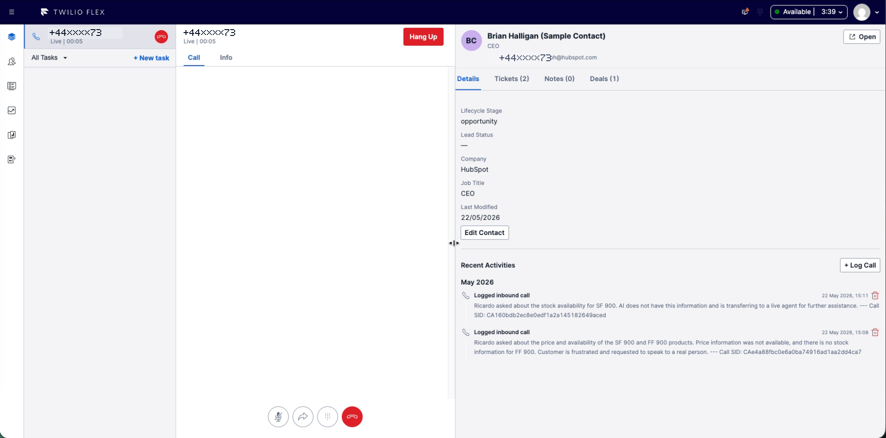
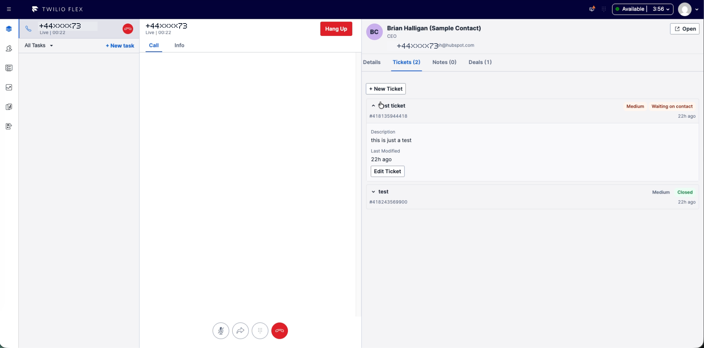
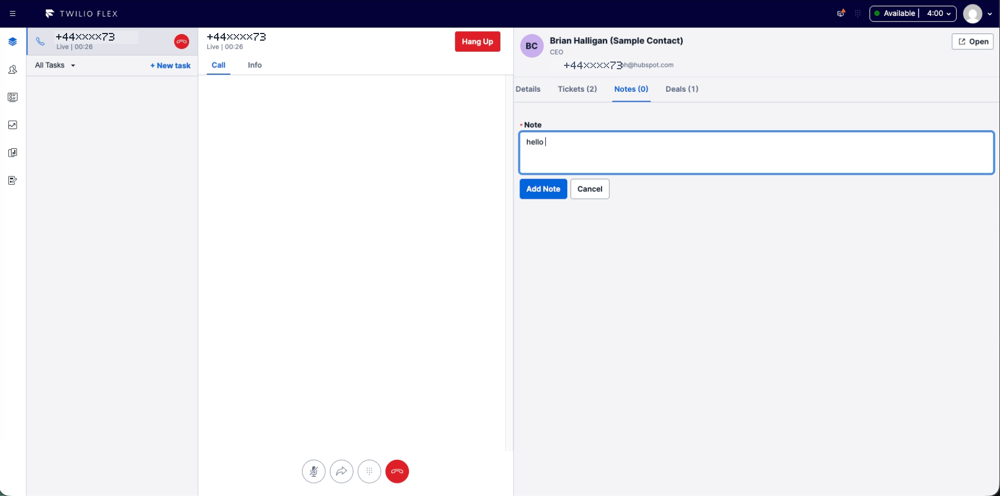

Screen Pop At Answer Time
Agents see who is calling, how to address them, and whether there are open tickets or active deals before they lose the first few seconds of the conversation.
A reference architecture for bringing HubSpot customer context directly into Twilio Flex, giving agents instant screen pops, interaction history, CRM actions, and post-call note automation in a single workspace.
Why It Matters
The goal is not to rebuild all of HubSpot inside Flex. The goal is to put the highest-leverage CRM context and actions in front of the agent at the moment they need them, while leaving HubSpot as the complete CRM system of record.
Agents see who is calling, how to address them, and whether there are open tickets or active deals before they lose the first few seconds of the conversation.
Recent notes, calls, tickets, and deals are available in the same surface as the live Flex task, reducing the need to hunt through another tab.
Twilio Studio or post-call automation can push summaries and call metadata into HubSpot so agents do not have to manually recreate conversation notes.
Agents can search contacts, review tickets and deals, update common fields, and launch outbound calls from Flex while still retaining a deep link to HubSpot.
Pragmatic scope: Use Flex for the agent-critical workflow and HubSpot for the full CRM record. That keeps the integration useful without turning the plugin into a second CRM product to maintain.
Example UI
These examples show the pattern in practice: the live Flex task stays in the main agent workspace while the right-hand CRM panel renders HubSpot context and actions purpose-built for the agent workflow.
Agents can see customer fields, recent calls, and AI-generated call summaries without leaving Flex.

Open and closed tickets can be surfaced next to the call, with status and priority controls tailored to the support process.

Agents can add structured notes during or after the conversation, while automation can write summaries through the same backend pattern.

System View
Keep the Flex plugin focused on agent experience. Keep authentication, rate-limit handling, caching, retries, and HubSpot-specific API behavior in the backend.
Handles the live conversation and uses Flex as the primary workspace.
Hosts the live task, CRM panel, click-to-dial, and idle dashboard.
Renders screen pop, search, contact details, tickets, notes, deals, and timeline.
Server-side proxy for HubSpot credentials, phone normalization, CRUD, retries, and protected writes.
Short TTL cache for contact lookup, related records, associations, owners, properties, and pipeline metadata.
Contacts, tickets, deals, notes, calls, companies, associations, and activity timelines.
Deep link target for the complete HubSpot record when the agent needs the native CRM surface.
Runs protected functions for call-flow events, routing context, and post-call logging.
Publishes transcripts, summaries, classifications, and follow-up context into HubSpot.
Design principle: Flex calls your backend, your backend calls HubSpot, and HubSpot remains the source of truth. The browser should never hold HubSpot credentials.
Agent Experience
The integration should feel fast even when HubSpot has a lot of related data. Load what the agent needs first, then progressively hydrate richer context.
Flex receives a task and extracts the customer phone from inbound or outbound task attributes.
The backend searches HubSpot by normalized phone number and returns a concise contact summary.
The plugin renders name, phone, email, company, owner, and a deep link to HubSpot.
Tickets, notes, deals, companies, and activities load independently so one slow API does not block the panel.
The agent can update records, log calls, close tickets, move deals, or open the full HubSpot record.
Capability Model
Treat this as a menu. A proof of concept can start with read-only screen pop and grow into a full operational CRM workspace.
Show customer context without making agents tab-hop.
Keep routine CRM work inside Flex.
Use protected functions for server-side automation.
Data Push Pattern
The same backend boundary used by the Flex plugin can also receive trusted server-side events from Twilio products and write the resulting conversation data into HubSpot. This lets teams improve CRM hygiene without asking agents to manually copy summaries, transcripts, dispositions, or intent data after every call.
A call ends in Flex, Studio, or another Twilio voice flow. The system has a call SID, customer number, agent context, and routing metadata.
Twilio Conversation Intelligence, Flex Copilot, or another summarization layer generates transcripts, summaries, intents, outcomes, or QA signals.
Studio or a callback invokes a protected backend function with the summary, transcript reference, direction, duration, call SID, and customer phone.
The function searches HubSpot by normalized customer phone number. If no contact exists, it should skip logging rather than create a record unless that behavior is explicitly approved.
The backend writes a call log, note, or custom object record with the summary, transcript link, call metadata, and selected AI fields.
Pattern reuse: once the API-backed CRM boundary exists, Flex UI actions and Twilio automation can both use it. Agents get live context; backend automations keep HubSpot complete after the conversation.
Performance + Limits
HubSpot applies app and account-level API limits. The blueprint should assume that every agent screen pop can otherwise fan out into several CRM API calls.
| Data | Cache Strategy | Invalidation |
|---|---|---|
| Phone → Contact ID | Short TTL cache keyed by normalized E.164 phone. This protects repeated lookups during transfers or refreshes. | Invalidate after contact create/update or after a failed lookup is retried manually. |
| Contact Summary | Short TTL cache for header fields used in screen pop. | Write-through after Flex edits; refresh on tab focus or agent request. |
| Tickets, Deals, Activities | Short TTL per contact and object type. Load tabs lazily where possible. | Invalidate only the affected object list after create/update/delete. |
| Owners, Pipelines, Properties | Longer TTL metadata cache because these change less often and are shared across agents. | Scheduled refresh, admin-triggered refresh, or webhook-driven invalidation. |
429 responses with exponential backoff and jitter.Reference limit to plan around: HubSpot lists privately distributed Free and Starter apps at 100 requests per app per 10 seconds and 250,000 requests per account per day. Treat these as planning inputs and verify the current HubSpot limit page before production sizing.
CRM Governance
The technical integration is straightforward; the CRM operating model is where production mistakes hide. Have these areas reviewed by a HubSpot partner, CRM owner, or HubSpot solutions architect before rollout.
Trust Boundaries
The browser should never hold HubSpot credentials. Make the plugin powerful, but keep trust boundaries boring. Boring trust boundaries are underrated; they are the spinach of architecture.
Store HubSpot private app tokens or OAuth credentials only in the backend environment. For production, prefer OAuth when agent-level attribution or marketplace distribution is required.
Use public functions only for browser-facing plugin APIs. Use protected functions for Twilio Studio or internal automation such as post-call summary logging.
Use build-time Flex plugin config for public values like backend base URL and HubSpot portal region. Do not treat portal IDs as secrets.
Move from a shared private app token to OAuth when per-user attribution, permission boundaries, or multi-tenant distribution become requirements.
Hardening Path
Repository Pattern
These endpoints mirror the implementation pattern used in this project. Names can change, but the boundary should stay the same: Flex calls your backend; your backend calls HubSpot.
| Endpoint | Responsibility | Audience |
|---|---|---|
GET /contact/search?phone=... | Search HubSpot contact by normalized phone number. | Flex plugin |
POST /contact/create | Create a new contact when no match exists. | Flex plugin |
POST /contact/update | Update contact properties from the details tab. | Flex plugin |
GET /tickets?contactId=... / POST /tickets | List, create, update, prioritize, and close tickets. | Flex plugin |
GET /deals?contactId=... / POST /deals | List, create, update, and advance deals through pipeline stages. | Flex plugin |
GET /notes?contactId=... / POST /notes | List, create, and delete notes. | Flex plugin |
GET /calls?contactId=... / POST /calls | List activities and manually log calls. | Flex plugin |
POST /log-call | Protected Twilio Studio function for post-call summary logging. | Studio automation |
GET /search?query=... | Idle-state contact search. | Flex dashboard |
GET /tickets/list?status=open | Idle-state ticket queue view. | Flex dashboard |
GET /deals/list?status=open | Idle-state deal follow-up view. | Flex dashboard |